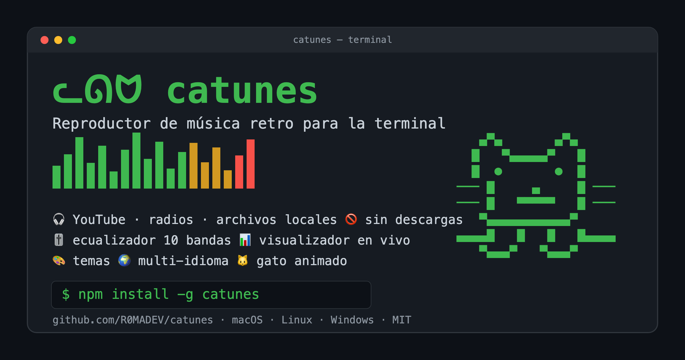

A retro terminal music player with a real audio-reactive visualizer.
YouTube · radios · local files — no downloads. Free & open source.
▄▀▄ ▄▀▄
█ ▀▄▄▄▄▄▀ █
█ ● ● █
──█ ▄ █──
──█ ▀▀▀▀▀ █──
▀▄▄▄▄▄▄▄▄▄▀
▄▄▄▄█ █ █ █▄▄▄▄
▀▄▄▄▀ ▀▄▄▄▀
YouTube, internet radios and local files. Pure streaming, no downloads.
Search thousands of free stations by country, genre or name.
A real graphic equalizer with presets, applied live.
Real FFT bars with smoothing and falling peaks — several modes.
Catppuccin, Dracula, Gruvbox, Nord, Tokyo Night & more.
A little cat that dances, sings and reacts to your music.
English & Spanish, clean keyboard-driven TUI.
macOS, Linux and Windows. One command.
Requires mpv (audio engine).
yt-dlp and ffmpeg are auto-downloaded on first use.
Run catunes doctor to check your setup.
